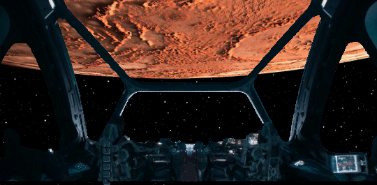

Chapter 08 Description
Zombies on Cargo Ship CS-313. Captain Russell and crew check out CS-313 for survivors and attempt a rescue mission. Norman plays a big part in the rescue attempt. Because of Marcus' greed, zombies land on Mars. Betty is surrounded by zombies and once again Captain Russell and crew attempt a mission to rescue Betty. During the rescue operation Cody is bitten by zombies while saving Betty.

Zombies Cargo ship CS-313 was part of the newest fleet of cargo space ships that Hy-Space had built to ferry cargo between Earth, Earth's Moon and Mars. Cargo ship CS-313 had six crew members, the captain (Tomas Morriss), co-pilot (Edo Amat), navigator (Virat Sharma), cargo loadmaster (Jeanie Frankel) and two cargo specialists (Barb Kramer and Aliyah Simmons). The cargo ship CS-313 was a routine sight in the skies between the Moon and Mars. It had been making the journey for two years, transporting goods and supplies between the two worlds. This was all part of one of Marcus' devious plans. Marcus Mephitis is a powerful and corrupt businessman. He is known for his ruthlessness and his willingness to do whatever it takes to make a profit. Not only had he already removed over 200 brains and put them in racks in his warehouse on the Moon but now he was shipping the rest of the bodies to Mars and selling the meat as beef. No beef is available on Mars except the beef that is shipped in from Earth. It is simply too expensive to raise livestock on Mars. He had been secretly shipping just a few corpses at a time for special occasions like corporate dinners or customers who were willing to pay his exorbitant prices.Marcus was selling the meat as an exotic and protected Portugal duck. They were in themselves forbidden to be exported because they were so rare. He had excellent chefs prepare the meat and with the right spices and help from a 3D printer they could make almost anything look and taste like whatever they wanted it to. Marcus gave strict orders to his "butchers" to chop up and cremate all of the "duck carcasses" so there would be no evidence of what he was doing. The butchers themselves were unsavory characters and they figured out early on where the meat came from. Also Marcus had asked them to crush the skeletons, cremate the remains and then bury the ashes in an industrial waste area. This was additional work that the butchers resented and was also very time consuming. So the butchers decided to find a place to dump the carcasses instead. The butchers found a dark and secluded ravine that had industrial waste dumped in it over the years and had restricted access. It was however only a few hundred yards off the back entrance to their complex. So sure enough, that is where they started to dump the skeletons.
Today CS-313 had some more special cargo, corpses. Lots of them. Sergeant Hicks, who works on the Hy-Space lunar warehouse loading docks had just finished preparing this unique cargo and notified the captain of CS-313 that his men were now loading them into the CS-313 cargo hold. Click, click, "Sergeant Hicks to Captain Morris, all the corpses are finished being freeze dried, vacuum packed and shrink wrapped. Okay Sergeant, start loading them up in the cargo hold, I'd like to get to the first refueling station sometime before Friday. You know how I hate to waste my weekends out in space. Right Captain, will do. I don't want to spend any more time with these dead souls than I have too. They give me the creeps!" Captain Morris and his crew have been pulling corpse duty for the past seven months and there's nothing more boring than corpse duty. "Sir, I still don't get it. Why doesn't Hy-Space just jettison all these dead bodies out into deep space and save a couple hundred million Hydros, instead of us having to haul them all the way back to Mars. It just doesn't make any good sense to me but I'm just a country boy so I guess I don't get paid to figure out these things. No sir, doesn't make any good sense." The journey to Mars took about six months. During that time, the crew would spend their days monitoring the ship's systems and conducting repairs as needed. They would also spend time exercising and keeping themselves entertained. For the six person crew, except for the captain, they believed they were making another routine cargo run from the Moon to Mars. Their ship had crew living quarters in their cockpit/navigation area and the majority was cargo space. External tanks were used for lift off from the Moon. The Moon's gravitational pull is 17% of Earth's gravitational pull. So it still needed thrust to escape from the Moon. The fuel tanks will get jettisoned, collected and returned to the Moon for re-use. The cargo ship doesn't need a lot of thrust in space. It has enough internal power for course corrections and docking to the refueling stations. Then when it gets to RFS-5 it has new full fuel tanks attached so that it can successfully enter Mars atmosphere and land safely.
The navigator just received an alert from NASA and Space Force and wanted the whole crew to hear. Over the intercom he addressed the rest of the crew. He said, "NASA and the Space Force have issued a warning that the sun is experiencing extremely unique and powerful solar flares. The warning states that all spaceships should take precautions for their crews, as the flares could pose a significant hazard." Solar flares are eruptions of radiation from the sun. They can cause a variety of problems on Earth, including disrupting communications and power grids. However, they are especially dangerous for astronauts in space. The solar flares that NASA and the Space Force are warning about are unusual in their strength and duration. Scientists say that they have never seen anything like them before. The flares are expected to continue for several days. NASA and the Space Force are advising all space ships to take the following precautions: Stay in shielded areas of the ship as much as possible. Avoid extravehicular activities (EVAs). Wear protective clothing when outside the ship. Monitor radiation levels closely. NASA and the Space Force are also closely monitoring the situation and will provide updates as needed. On CS-313 there were safety and escape pods for each crew member. During the worst part of the solar flares, they would have to put the ship on auto-pilot and all get into their safety/escape pods. The pods contain extra shielding and they will all be protected from the effects of the solar flares and resulting radiation. The warning came in plenty of time and sure enough the solar flares were stronger than anyone had predicted. The whole crew was safe and protected in their pods. Ever since the intense solar flare hit their ship the crew started to notice that things were different. Not good different but, what the hell was that, different. It was little things at first. When the crew worked back in the cargo bay they started hearing things. Loadmaster Jeanie Frankel was the first to actually document an event. Jeanie was tasked, among other things, to do a weekly inspection of the cargo bay. She noted on the first inspection after the solar flare the following anomalies. Two crates from the Moon were found to be askew from their racks. They weren't in danger of being dislodged but they definitely were moved a couple of inches. She looked closely at other crates in the area but there was no evidence that they had moved. So Jeanie thought it couldn't have been attributed to a pitch or roll of the craft because that should have affected other crates in the area. Jeanie thought if it wasn't that. then maybe one of the other members of the cargo crew hit it accidentally and didn't report it yet. Jeanie questioned the other members of her crew and was surprised at what they told her. Since the solar flare, the crew reported to her unexplained noises. Also three other crates had shown a little movement. Again not anything of concern but something was definitely going on. One crewman asked to go off the record and reported that he actually heard moaning in the area that Jeanie was talking about. He was new to the crew and this was his first mission so he naturally thought this was the other crew members pranking him or doing some form of hazing. This continued for two weeks and got so prevalent that the crew started openly referring to the cargo bay as being haunted. Loadmaster Frankel documented all reports in her trip log. By week three she knew something was going on. Whether it was problems with the craft or a bored and restless crew it no longer mattered. She ordered that all crew members who went to the cargo bay had to go there with a buddy. On week five, Aliyah Simmons and Barb Kramer had inventory duty of the cargo bay. Simmons had overslept so they got off to a late start. When they went to bay B-127 they saw an unusual amount of activity and one of the crates looked partially open. It took a while to straighten everything out. They finished up later than usual and were hurrying back to the mess because they were late for dinner. Kramer loved taco Tuesday. The first Tuesday of the month always featured real meat, a treat Kramer didn't want to be late for. When Simmons told her to go on without her because she left her inventory scanner down by bay B-127, Kramer did not hesitate a moment. She headed straight to the mess leaving Simmons by herself. The next morning at roll, Simmons was not there. "Hey where is Simmons?", Frankel said in a loud agitated voice. Kramer immediately knew something was really bad. She told loadmaster Frankel about her concerns. Frankel immediately put together a search party and they headed straight to bay B-127 where Simmons was last seen. There she was, dead on the floor. There was an obvious wound on the top of her head. But much worse, she looked flat, like she had been deflated. It was an awful site. Then, a couple of days after specialist Simmons was found dead, things changed again. Apparently a very small asteroid struck the ship and penetrated the hull. From a mechanical standpoint, there was little damage to the ship. The minute hole was detected and repaired by the automatic maintenance system. What no one knew however was that a miniscule virus from deep space was on that small piece of asteroid and it penetrated into one of the corpses. Cargo ship CS-313 had six crew members, the captain (Morris), co-pilot, navigator, chief loadmaster (Frankel) and two cargo specialists, Barb Kramer and Aliyai Simmons. Simmons was dead, leaving five live humans on the ship against an enemy that no one on board knew the exact number or how to defeat them. Five days had passed since the crew locked down in their individual pods. Unfortunately the external communications were down. They could talk to each other on the internal intercom system. They kept each other's hopes up by assuring each other that help was on the way and would arrive soon. Periodically each person would go through a period of time when someone or something was banging on the outside of their pods. It was an annoyance to some of the crew and downright terrifying to others. The captain, co-captain and navigator returned to their stations to reset course to Mars. Their intention was to contact the Space Force, make course corrections then return to their pods until they knew exactly what was going on. Frankel and Kramer remained in their pods and never heard from them again. Cargo ship CS-313 had not communicated with Space Force Control since shortly after leaving RFS-5. It had passed through a rather minor asteroid belt, its definition on radar looked normal and it was on course to enter Mars' atmosphere in twenty Earth days. Routine attempts were made to contact CS-313 but to no avail. It was generally assumed that they suffered some sort of comms failure and were working to get it back online. Notes were now being entered in the Space Force Control's log and were flagged but nothing more than that. As the watch commander had said, "These kinds of things happen all the time. There could be a hundred reasons why they aren't talking to us. As long as they stay on course and meet times on their flight path, we aren't going to push this up the chain for now. If we haven't heard from them by five days out, then we will start waking people up." This was the worst kind of news possible for the crew of CS-313. First they assumed that surely someone would have heard their distress call and naturally help was on the way. No one heard the distress calls because the comms officer was now a zombie and never sent the distress calls. Also the crew went into lockdown mode and were not aware of anything that was going on with the ship. They each had retreated to their emergency safety pods. These were the same pods they went to when they got the alert for the high intensity solar flare. They took comfort in the fact that they were in titanium reinforced pods with magnetic shielding from solar flares and water, food and air sufficient for a fourteen day event. Even if the ship broke apart, they separately could survive in space for fourteen days. Plus their emergency locator beacons would surely be picked up by someone. Unbeknownst to the crew they were all in grave danger. No one was doing anything. Space Force Control had logged abnormalities but no actions were being taken. They were twenty days out with fourteen days of life support left. Cargo specialist Barb Kramer and cargo loadmaster Jeanie Frankel were both locked down in capsules waiting to be rescued. They both were aware that there was not enough food or oxygen to last them until the cargo ship reached Mars. Cargo loadmaster Jeanie Frankel realizes that no communications have been received, and someone has to assess what the actual situation is. Frankel and Kramer are the only known crew members alive. Through the communication between the loadmaster (LM) and cargo specialist 1 (CS1) they figure out good news and bad news. The good news is that it is possible for them to survive the trip to Mars in pods. The bad news is that they are going to have to switch pods after fourteen days. With the rest of the pods not being occupied, there will be enough oxygen and supplies to survive the trip to Mars if they switch pods. The problem being, how do they switch pods without getting attacked by whatever attacked Simmons. How many were there, where were they, did they have patrols or did they just randomly run around. They were going to have to figure this out during the next two weeks, or they would die anyway when their resources ran out. Although it was very sketchy and preliminary, Captain Russell started to pay attention to the chatter that a cargo ship was not responding to guidance from Space Force Control. His interest grew when he realized that he was actually very near the cargo ship CS-313. He had actually seen it leave from RFS-4. It seemed routine then and he didn't think twice about it until he started hearing the radio chatter. Since it wouldn't add too much time to his mission, he contacted Space Force Control and offered to do a fly by just to be on the side of caution. So that is what Captain Russell and his crew set off to do. In about eight days he had CS-313 in sight and commenced his fly-by. He was able to position his ship so, with the aid of a telescope he was able to actually look into the cockpit window. What he saw both confused and terrified him. Clearly visible were two dead crewmen. They were in the seats of the pilot and co-pilot. The navigator's seat was bloody but empty. The cockpit was physically torn up and there was blood splattered everywhere. Both bodies had massive head wounds and appeared to look, for lack of a better word, deflated. Captain Russell relayed his horrific findings to Space Force Control and they declared the CS-313 a dead stick. That meant they determined that there was no one onboard who was capable of flying the ship. They would monitor it to make sure it stayed on course and at the end of its voyage, they would be able to bring it onto Mars via a tractor beam.
Escape from CS-313 Captain Russell also sent all of this information to his old friend, Dr. Dumas. She poured through the data that was collected by Captain Russell's crew. Following her suggestion, Captain Russell performed a thermographic image scan of the ship. What shows up on the screen surprises and confuses him. He is able to determine that there are two occupants of the cargo ship that are definitely alive and appear to be in some sort of protective capsule or pod. There are also three dead humans, as evidenced by the infrared radiation in the electromagnetic spectrum. The scan can detect decomposing bodies. The scan also detects scores of decomposing bodies that are moving about the cargo ship. There is also one other entity on the ship that is not able to be understood by anyone in his crew. The entity has decomposing organisms but also has the signature of an unidentified life form. Captain Russell sent the information to Betty and Dr. Dumas for further analysis. After a couple days Betty relayed information from Dr. Dumas back to Captain Russell. Dr. Dumas requested that Captain Russell locate the signature of the unidentified life form (UIL), and ping the ship in the proximity of the UIL just to see what happens. What happened was interesting to say the least. When the ship gets pinged in the close proximity of the UIL, the moving decomposing organisms tend to flock closer to the UIL. The more the UIL is annoyed, the more the moving decomposing organisms (MDOs) flock around the UIL as if to defend it. Upon hearing the results of the pinging exercise, Dr. Dumas asked for another experiment. She wanted to see if somehow they could force the UIL to move or be chased so to speak. Secondly, if the UIL could be chased or convinced to be moved, what happens to the rest of the moving decomposing organisms. She noticed low frequency communications between the unidentified lifeform (UIL) and the MDOs. Captain Russell's crew tried several different frequencies at different decibels and durations. After several trials, they were able to "move" the UIL about the ship, and the MDOs consistently followed or protected it. Dr. Dumas noticed that whenever the UIL was pinged or harassed by the signals from Captain Russell's crew, the UIL would send out a low frequency signal and the MDOs would immediately go to the UIL location. They would stay with the UIL for fifteen to twenty minutes then randomly drift away to other areas. As soon as the UIL sent another signal the same process would start all over again. Dr. Dumas met again with Betty and Captain Russell to devise a plan to get the two living members of the CS-313 crew off the ship and to safety. First they had to run some more experiments to verify Dr. Dumas' theories. Next they needed schematics of the CS-313 to plan the best exit strategy. Next Dr. Dumas told Captain Russell that she believed that two live humans were still aboard the CS-313. She wanted Captain Russell to figure out a way to communicate with them so that they could better understand what was happening onboard the CS-313. Captain Russell met with his crew to brainstorm about the request for communication with CS-313. It was actually Norman who came up with a solution. He reminded everyone that as the junior member of the crew he had to take care of the most menial and unpleasant tasks associated with the ship. One of those was dislodging the waste shoots frozen waste if it doesn't separate from the ship correctly. The process entails taking the maintenance drone out to the waste chute and chipping off the frozen blue waste. There is one last step in this unpleasant task. You need to plug into a comm port right next to the chute and ask someone on the other side to flush just to make sure the chute is clear. At this point Captain Russell asks Norman what dumping shit has anything remotely to do with the communication challenges. Norman replied, well obviously you never had to dump shit or unclog the chute. It's the comm port that's the answer. Every Hy-Space ship has the same waste disposal system. Therefore CS-313 also has a comm port next to the waste chute. Captain Russell then said to Norman, "Now you have my undivided attention, what's your plan?" Norman said, "We have a one-man ship used for inspection and maintenance on our ship. Pull alongside CS-313 no more than 100 meters apart. I will fly over to the CS-313 hook up to the waste chute comm port and see if I can contact anyone on the ship's internal comm system." Norman went down to the cargo hold and climbed into the small maintenance ship and made the uneventful flight over to CS-313. He went to the waste chute and plugged into the adjacent comm port. Then he started talking, "This is Space Cadet Norman Narval from Captain Russell's tanker ship." To his surprise and relief he got a reply. "This is cargo loadmaster Jeanie Frankel of the CS-313, where are you and what are you doing here?" Norman replied, "I am attached to the CS-313 and we are here to see if we can help you and possibly rescue you. What is your situation?" Jeanie told him, "This is what I know about our situation inside the CS-313. Cargo specialist 2 Aliyah Simmons had been killed by something. We were alerted by our Captain to go to our containment pods. Cargo specialist Barb Kramer and I are the only two who made it here." Norman told her the bad news that the rest of the crew was dead. He spared her the details. Jeanie told him that they knew something else was on the ship but didn't know what they were or how many there were. All that she knew for sure was that she and Barb were safe in their pods and weren't going anywhere. Norman asked her how long they could stay there. Jeanie said, "Nine or ten more days." Norman told her that it would be twenty days before they reached Mars. So they either had to switch pods or move over to Captain Russell's tanker ship. He told them in the meantime under no circumstances were they to leave their pods. He was going to return to his ship, brief the Captain, and return in a few days with a rescue plan. Norman returned to Captain Russell's tanker ship and explained the situation. They discussed every detail with Betty and Sophia. Dr. Dumas checked the CS-313's manifest for cargo and people and discovered that the CS-313 was actually shipping corpses to Mars. What really caught her attention was that there were exactly 124 corpses on the CS-313. That was the exact same number of unidentified entities that Captain Russell reported from the scan of CS-313. Dr. Dumas doesn't believe in coincidences. She immediately started research to find out if and how those 124 corpses were re-animated. Plus there was one additional entity moving about. This entity was human but not a reanimated corpse. This was a walking dead human. From looking at the pictures taken from the cockpit it was very likely the navigator. He was probably infected with some kind of virus which changed him into this entity. With Dr. Dumas' theory validated, they proceeded to plan the exit strategy. Once again Norman stepped to the forefront. He explained that the waste chute was located in a sealed compartment. This wasn't done for any other reason but to keep the smell from the rest of the cargo area. The sealed compartment measured thirty feet by thirty feet. There was plenty of room in the sealed compartment for the two survivors to climb into their space walk suits. The other advantage the trash area had was that it was close to the pods that the survivors were currently staying in. The other exits were on either side of the back of the cargo area, one on the left side of the ship, up front just behind the flight deck, and a smaller escape hatch above the flight deck. Captain Russell interrupted Norman, "So you are saying, your proposal is to flush them out of CS-313 into space?" Norman defended his plan. He said, "Look at the specs. The chute is 60" by 60." That provides plenty of room for the crew to exit after they don their space walk suits. When the flush cycle is over the chute will re-seal so nothing else can get out. Besides, they would have time to organize the flush. Once they got into the waste compartment they could seal it again, which would give them time to put on their suits in safety. It will take them about fifteen minutes to get into their suits. Combining the short distance they have to go to get to the waste disposal area, and a secure place to get into their suits, I think this plan makes the most sense and gives us the best chance for success." Captain Russell listened to alternatives presented by other members of the crew. They went through scenarios that had the crew exiting through one of the other doors. At the end they unanimously concluded that no matter how wonkie sounding, Norman's plan really did have the best chance for success. The next thing to figure out was how to collect the crew and bring them on board the tanker ship. Once again Norman stepped up. He said, "I will pull alongside the CS-313 just like I did for the comm excursion. There are tethers on the small maintenance ship used to secure it to the larger craft that it is servicing. Upon exiting their ship, the two crew members could grasp one of the tethers and secure themselves to the side of the maintenance craft. I could then take them over to the tanker ship." Once they all agreed, they put the plan into action. First Captain Russell's crew started harassing the UIL with pings. This drove the UIL to the flight deck and predictably, it was followed by some of the MDOs. From what Captain Russell could deduce from the scan, about fifty to sixty MDOs were surrounding the UIL. There were still sixty-five to seventy-five MDOs wandering about the ship. Captain Russell's crew upped the volume and frequency. Most of the MDOs were now surrounding the UIL. The other MDOs were randomly moving about the cargo ship. Most importantly there were no MDOs within two hundred feet of the pods, and the path to the waste disposal area was also clear. Norman was giving Barb and Jeanie updates on the whereabouts of the UIL and MDOs. Jeanie was the first to see Simmons' body after she had been attacked and the sight has haunted her ever since. When she heard the update she yelled, "I am out of here!" She immediately got out of her pod and darted toward the waste compartment. Barb yelled at her to stop, but she didn't listen. She was going to run her down and drag her back until she saw five or six MDOs coming their way. Barb knew there was no time for a fight or even a scuffle. She screamed at Jeanie to grab her suit and run. Barb said, "I will give you some time." The next thing Barb did was take out her phone and start recording the MDOs headed her way. Although it was unbelievable and something you only see in movies, Barb knew what she saw and what she saw were five zombies moving toward Jeanie. She yelled and waved at them to try to keep them away from but they didn't respond to that type of stimulus. As they moved they moved their arms from side to side much like a seeing impaired person would use a cane. Barb started throwing cargo in their way to redirect them towards her. This seemed to work. But the problem with that was that the zombies started chasing her. When she saw that Jeanie had made it to the waste compartment, she ran back to the closest pod. The zombies were gaining on her and she wasn't sure that she was going to make it. Luckily there was a forklift in a side aisle about twenty feet ahead. Barb hopped on the fork lift and pointed it down the aisle where the zombies were coming from. She raised the forks about three feet and sent it down the aisle. The sensors kept it going down the center of the aisle. As she was running, she would look back from time to time. The fork lift drove right into the zombies. Two of the zombies were impaled onto the forks. They kept moving like June bugs on a sticker bush. That slowed them down enough for Barb to take more video. She was able to get to the pod with no further events. This was the pilot's pod and was fully stocked with supplies and even had some additional comm equipment. Meanwhile Jeanie put on her suit and flushed herself off the ship. Norman was outside in the maintenance craft waiting for her. The waste port opened and Jeanie came shooting out. Norman hadn't even thought about the velocity at which the waste was ejected. It actually came shooting out at about 32 km/h. It always came out at this speed so it would successfully clear the ship. If it was allowed to just trickle out there was a danger it might get snagged on something on the craft. Norman talked to Barb over the comm port and once he was assured that she was safe for now, he shoved off the CS-313 and went out to rescue Jeanie who was floating away from the ship and headed out to deep space. Norman fired his boosters and caught Jeanie in less than thirty minutes. Once Jeanie was secure onto the maintenance craft, they headed back to the tanker ship. After Jeanie got settled on the tanker ship and calmed down, she met with Captain Russell, Norman, Betty and Dr. Dumas. Barb was able to send her videos to Norman who relayed them to Captain Russell, Betty and Dr. Dumas. The three finally got to see what the MDOs were. They confirmed that the "zombies" were indeed re-animated corpses. They also confirmed that these were the same corpses that Marcus planned to sell as meat on Mars. So they now knew some of the What, but still had no idea of the How, or Why, they rallied around the only UIL. Their immediate concerns were first to see what they could do to get Barb off the CS-313. Secondly they had to report to Space Force Control the status CS-313. They decided not to bring up the UIL just yet. As impossible and incredible as it seemed, there were 124 reanimated corpses on CS-313. One of them also contained an as yet to be identified life form that appeared to be able to at least direct, if not outright control the other 123 "zombies." There was also the navigator zombie who was also showing signs that it was following some sort of leader. The group decided the best thing to do was to convince Space Force Control to blow up CS-313 in deep space. It would probably be best to use an incendiary nuclear device. They didn't want to tell them that Barb was alive and still on CS-313 in case they decided to tow the CS-313 to Mars and risk the zombies somehow getting free. They all agreed that would be very bad. By Captain Russell's estimate they had about two days to free specialist Kramer before Space Force Control would decide to take action. Norman scanned the CS-313 and unfortunately there were about a dozen zombies either next to Barb's pod or directly in the path to the waste compartment. Norman said, "Of course they are in the way, damn, nothing is easy in space." They now had to go back to the CS-313 and repeat the steps they took to free loadmaster Frankel. The big difference being, Barb would be on her own, no one to create diversions. Like before, they were able to lure the UIL/Zombie, which Norman nicknamed Queen, into the flight deck and all but two followed her there. They tried every trick they knew for hours but no matter what they did, two zombies stood in the way of Barb getting to the waste compartment. Norman took his maintenance craft over to the CS-313, hooked up to the coms and asked Barb to try to get eyes on the two zombies that appeared to be guarding her and try to figure an alternate route to the waste compartment. Barb was able to utilize a small drone attached to the pod. The drone was set up to be used in a situation just like this. Barb navigated the drone down the aisle she had to take to get to the waste compartment. Just like Norman had reported, the zombies were there. Barb told Norman why the zombies weren't leaving their posts. They were impaled against some cargo with the fork lift. Norman checked the scans and said, "Barb, get moving, right now." Norman didn't have to tell her twice. Within fifteen minutes the waste chute opened and Barb shot out. Norman had already repositioned his craft and easily retrieved Barb. Just as expected, two days later, Space Force Control contacted Captain Russell, thanked him for his support and informed him that they were going to take over the recovery of the CS-313 and would set up a tractor tow beam and bring it safely to Mars. Captain Russell lost it when he heard Space Force Control's response. First they didn't believe the whole zombie story. Secondly they accused him of trying to loot the precious cargo that was on board. Apparently Marcus himself convinced the chief of staff of Space Force that there was invaluable cargo onboard CS-313 and that it absolutely had to get to Mars. He also convinced the chief of staff that there was probably a nefarious coordinated plot to steal the cargo which was worth billions. Space Force Control gave Captain Russell one day to clear the area or else they would be fired upon. Captain Russell again met with Betty and Dr. Dumas. Captain Russell knew that it would do no good for either Betty or Dr. Dumas to surface. Marcus would have them killed as soon as they surfaced, then he would have his spin doctors ruin their reputations. All three agreed to watch the situation and try to survive it. They also knew that if Space Force Control brought CS-313 to Mars, the zombies would somehow escape the craft.Zombies land on Mars The announcement was aired at the top of every hour on GNN. Marcus Mephitis announced, "In cooperation with the great people at Space Force Control, Hy-Space cargo ship CS-313 has been contained and is being towed to a point where Space Force Control will use their tractor beam to bring the most valuable cargo ever put on a ship to Hy-Spaces manufacturing and storage facility on Mars. It has been determined that the crew has not survived the journey. To error on the side of safety, the Space Force will secure the area and enter the craft first, until the full fate of the crew can be determined." Between Betty and Dr. Dumas, they were able to get into the CS-313 manifest a little deeper. Besides the 124 corpses which would produce about 70 pounds of beef per corpse. That comes to 8,680 pounds of beef. At almost $600 a pound, Marcus expects to net $5,208,000 just for the meat. Marcus made side deals and was shipping gold bullion and priceless artworks. At this stage of development on Mars, there are no laws covering intellectual property or art. So if you possess art or precious metals on Mars you own it. Marcus' company then receives payment from the UN for providing cargo ship service to Mars, they receive shipping fees to not check what cargo is being loaded and they receive kickbacks for knowingly transporting stolen goods. So Marcus couldn't let CS-313 be blown up in space. It would ruin his business and turn some really bad people on him. Because of flat out greed, zombies were going to land on Mars. Marcus, citing security concerns, arranged for CS-313 to land on one of his private landing platforms. It was a deserted platform away from most of the present residential areas. It had been secured by high fences and was little known or forgotten. Marcus felt confident that this was a good spot to both contain whatever was actually on CS-313 and retrieve his cargo. That in itself was not a problem. That it was in the same compound, where Betty was hiding out with Sophia's exoskeleton, was a huge problem. Captain Russell knew from his combat experience that proper precautions weren't being taken to contain the zombies. Especially because they didn't even believe in zombies. The day finally arrived and right on schedule CS-313 touched down on Mars soil. zombies touched down on Mars soil. Through Betty's help, Captain Russell was able to watch the landing via CCTV. The Space Force paid absolutely no attention to Captain Russell's briefing or warning. After CS-313 was secure on the landing pad, they opened the side door and sent in six emergency medical technicians (EMTs) to check on the status of the crew. The screaming started within five minutes of entering the craft. One EMT made it out screaming, he was missing his left arm and he had bloody gashes several places on his body as if he was attacked by a bear or puma. A unit of Space Force guards rushed to the door with shields set and batons at the ready. They were not even remotely aware of what they were facing. Captain Russell put his head in his hands and screamed, "May god have mercy on their souls." He sat there with tears streaming down his face and watched what followed. What followed was 125 zombies ripping through the guards like a hot knife through butter. Blood was spurting in all directions as limbs and body parts were ripped off. It was interesting to Captain Russell that they didn't stop to feed, though they could have. Instead they got through the perimeter fence and went enmasse deeper into the manufacturing compound very close to where Betty was hiding out. Captain Russell muttered, unbelievable, then called for Norman. Captain Russell told him to get the whole band back together, they had a rescue mission.Betty surrounded by zombies Betty was absolutely terrified. She had gone through so much and now she was actually trapped by the zombies. Captain Russell explained the situation to his assembled team. Captain Russell, Norman and Cody start gathering supplies to launch a rescue mission. Scotty heads off to RFS-3 to get Sally as back up. Russell, Norman and Cody battle their way into the industrial compound and find Betty. In the midst of the chaotic battle against the zombie horde, Captain Russell, Norman, and Cody found themselves back-to-back, protecting Betty from the relentless onslaught. As they fought, they exchanged observations and frantically analyzed the situation. "These things are relentless!" Norman yelled, dodging a lunge from a decaying zombie. "Headshots barely slow them down!" "There's too many of them!" Cody added, his voice strained. "We need a better way to take them down!" Captain Russell, ever the strategist, surveyed the battlefield. He noticed the zombies were attracted primarily to sound and movement. A light bulb went off in his head. "We need to overwhelm their senses," he shouted, his voice resonating with authority. "Norman, use your grenades to create a diversion. Cody, you're with me. We'll create a sonic blast that will disorient them!" Norman heeded the call, tossing a grenade into the midst of the approaching horde. The deafening explosion momentarily distracted the zombies, drawing their attention away from their primary target. Taking advantage of the distraction, Captain Russell and Cody activated their sonic blasters. The air filled with a high-pitched frequency, so intense that it shattered glass and sent the zombies reeling in pain. The high-pitched sound disoriented them, disrupting their senses and causing them to stumble and fall. The combined efforts of the team proved effective. The disoriented zombies were easy targets, allowing Captain Russell, Norman, and Cody to dispatch them efficiently. The sonic blasts, in particular, proved to be incredibly effective, deterring the zombies and giving the team a much-needed advantage. As the tide of the battle began to turn, Captain Russell turned to Betty, relief flooding his face. "We got you, Betty. We're going to get you out of here." Cody told the others to go, as he could hold them off quite easily with the sonic blasters and ammunition he had. He told them to come back for him when Betty was in a safe place. Russell and Norman take Betty to a safer place while Cody provides cover. Scotty and Sally return to free Cody. Cody reports he has been bitten by a zombie, on his right calf. Sally checks in with Dr. Dumas. She sadly reports that nothing can be done to stop the zombie virus from eventually taking over his whole body. Then Dr. Dumas asks Sally to get on a secure personal line by herself. After about two minutes of instructions from Dr. Dumas and Sally repeatedly saying, "Yes, I can do that." Sally and Scotty head to the compound to rescue Cody and the others. Scotty repeatedly asked Sally to tell him what Dr. Dumas said. Sally said, "Scotty you don't need or want to know, just get me to Cody." Scotty says, "You know he can't be saved, so why put your life at risk?" Sally stared at Scotty with a cold venomous stare and through her clenched teeth belted out. "Just get me to Cody. Can you do that? Can you?" Scotty didn't say another word and turned his ship toward the compound and sped off. On the way Sally closed her eyes and thought very clearly of what she had to do and how to do it. She radioed to Betty to have Norman put one of "the boxes" on their roof. Scotty yelled, "This is insane, Sally, this is a suicide mission." Sally looked at Scotty gently, kissed him on the lips and said, "Shut the hell up and drive or get out. I got this and I will do it with or without you." With that, Scotty drove and didn't question anything she asked. The first thing they did was swing by and pick up the box. Then they located Cody hunkered down in a small container at the end of the compound. He was completely surrounded by about twenty zombies. As he killed some, more would show up. Sally approached this as any other rescue. She had been involved in quite a few over the years. She asked Cody what his status was. He reported he was in fairly good shape except for being bitten in the calf. Dr. Dumas interjected, "Cody, cut your leg off at the knee and cauterize the wound. Do it right now." Scotty and Sally were close to reaching Cody. When he took time to tend to his leg, even more zombies swarmed on top of the container. Sally assessed the situation, she told Cody and Scotty, that it looked like they had one pass at this, so she wanted them both to follow her explicit instructions. Scotty was going to approach at about seven feet above the top of the container, firing and clearing zombies off the top, as he approached. When Sally gave the command, Cody was to open the ceiling hatch and come out on the top of the container. Then Sally would grab him and he would be free. They made the approach as planned, Scotty was keeping the top cleared of zombies as Sally put on a suit and positioned herself at the bottom bay door. Ten seconds out, Sally shouted now. Scotty stopped firing and aligned his craft so the bay door hatch lined up with the top container door. Cody emerged just in time but the zombies also got back on top of the container, just as they were making the pass. He stood as tall as he could and raised his arms as high as he possibly could. When Sally was over Cody, she assessed the situation and took action. Scotty swung the craft around for a possible second pass, because Sally hadn't come back from the cargo bay yet. When he looked at the container, his heart sank. There, on top of the container, was Cody's body being consumed by zombies. Then Sally came back and said, "Good job Scotty, let's go." Scotty looked at her in disbelief. "Of all people, I never thought you would ever leave one of ours on the field, dead or alive." Sally smacked Scotty across the face again and said, "Snap out of it. You did great, just get us out of here and I will tell you all about it." So Scotty returned to the rendezvous point while he listened to Sally tell the specifics of what the conversation was with Dr. Dumas, and what actually happened to Cody. Dr. Dumas told Sally that Cody's whole body would be infected by the end of the day. So if they retrieved him within an hour or less, they needed to remove his head and put it in "the box." At least that way, they could connect him to the ZON and still be able to communicate with him in virtual reality. She knew it would be tough but she had to be assured that Sally could remove his head even though he would still be alive. Otherwise they would lose him forever. That is why Dr. Dumas insisted that Sally say out loud "Yes, I can do that." The task became much easier when Sally was approaching Cody, and saw that several zombies were actually gnawing on his legs and lower torso. Sally got her sword, (of course Sally always carried a sword when going into battle) and net and hung down by her legs and got ready. She timed her swing perfectly and cleanly sliced off Cody's head and caught it in the net. The hard part being over, she pulled herself and Cody's head back into the ship and deftly deposited his head into "the box" per Dr. Dumas' instructions. Upon hearing this, Scotty felt elated as he headed to the rendezvous point. When they returned to the rendezvous point, Scotty excused himself, grabbed a bag and threw up.Cody goes to the brain farm and joins Sophia Sally and Scotty raced against time to transport Cody's brain to the Moon brain farm. They knew that every minute counted, and they were determined to save his life. Sally had already loaded Cody's brain into the specially designed container and placed it in the cargo hold of their ship. Then, they blasted off into space, heading for the Moon. The journey was long and perilous, but Sally and Scotty never gave up. They dodged asteroids and navigated through dangerous nebulae, all while keeping Cody's brain safe and secure. Finally, after what seemed like an eternity, they arrived at the Moon brain farm. They were greeted by a team of technicians who were loyal to Dr. Dumas. They were eagerly awaiting their arrival. The technicians carefully removed Cody's brain from the container and placed it in a special chamber. Then, they used a neural network interface to connect Cody's brain to an exoskeleton. At first, Cody's brain didn't respond to the neural network interface. But Dr. Dumas and her team persisted, and eventually, they were able to establish a connection. Dr. Dumas and Cody were now both in the ZON. Dr. Dumas said to Cody, "I know that this is very confusing and foreign to you but have complete trust in me and I will explain everything." Dr. Dumas told Cody that she was going to join him in an alternate reality in the ZON in a quiet safe place so that they could talk. When Cody was able to open his eyes, he and Dr. Dumas were sitting in a simple white room with two chairs. There was a window that opened up to a beautiful skyscape of the Milky Way. Cody's eyes opened, and he looked around in confusion. "Where am I?" he asked. Dr. Dumas smiled. "You're on the Moon, Cody. You're safe." Cody sighed with relief. He couldn't believe that he was still alive. Dr. Dumas explained to him how he was alive. He had remembered fighting the zombies and saving Betty, but everything else was a blur. Dr. Dumas told him that the zombies had bit him and that his body had been infected mostly at the legs but not his brain. The tourniquet that he applied to himself stopped the blood flow from reaching his brain. Sally got to him in time and cut off his head and put it into the specially designed container and Scotty and Sally rushed him to the Moon. He had been checked out, and his brain did not contain the zombie virus. So Dr. Dumas connected his brain to the neural interface and now he was in cyberspace. Cody was in shock, trying to understand everything that had transpired in the last 24 hours. He was overjoyed to see Dr. Dumas again. He wasn't sure how he felt about being in the ZON. He said one of the first things he wanted to do was to tell Sally and Scotty thanks. Dr. Dumas said, I can arrange for you to talk to them. She pulled up a screen and Sally and Scotty appeared on it. "Thank you," he said. "Both of you." Sally and Scotty smiled back. They were glad that they had been able to save Cody's life. Now, Cody was ready to begin his new life as a brain-controlled exoskeleton operator and in the ZON where Dr. Dumas would teach him how to travel through the various alternate realities that she had designed. He was excited to still exist and still be useful to the 44th Triad. He knew that he had a second chance at life, and he was determined to make the most of it. Meanwhile, Dr. Dumas and her team continued their research on brain-controlled exoskeletons. They were confident that this technology had the potential to revolutionize space exploration and construction. And they were proud to be at the forefront of this new field.Alternate realities; Sophia and Cody united The year is 2057 on Mars, and Dr. Dumas has expanded her ZON neural network. She has come up with several alternative realities, each with its own unique set of possibilities. In one reality, Mars is a thriving colony with a population of millions. The colonists have developed new technologies that have allowed them to terraform the planet and make it more habitable. They have also established trade with other planets in the solar system. In another reality, Mars is a war-torn planet. The colonists have split into factions and are fighting for control of the planet's resources. The war has caused widespread devastation and loss of life. In a third reality, Mars is a desolate wasteland. The colonists have failed to adapt to the planet's harsh environment and have all perished. Dr. Dumas is able to access these alternative realities through her ZON neural network. She uses this knowledge to help the colonists make better decisions about their future. One day, Dr. Dumas is using her ZON neural network to explore the different possible outcomes of a new technology that the colonists are developing. The technology has the potential to revolutionize the way that the colonists live and work on Mars. However, it also has the potential to cause serious problems if it is not used carefully. Dr. Dumas sees the different possible outcomes of the technology in the different alternative realities. She sees that in some realities, the technology is used for good and the future for Mars. The colonists decide to proceed with the development of the technology. They know that it is a risk, but they believe that the potential benefits outweigh the risks. Dr. Dumas continues to monitor the development of the technology and the alternative realities. She is committed to helping the colonists create a better future for Mars. All work and no play makes everyone dull and uninteresting. Dr. Dumas is determined to never become dull and uninteresting. To ensure this she has created a secure alternate reality for herself and her partner, Cody Jacobs. Dr. Dumas and Cody are in love. They have been together for many years, and they have a deep understanding and respect for each other. They are also both passionate about their work. Dr. Dumas' work with the ZON neural network has allowed her to explore many different possibilities for the future of Mars. She has seen realities where the planet is thriving, and realities where it is struggling. She has also seen realities where Cody is alive and well, and realities where he is gone. Dr. Dumas knows that the future is uncertain. She also knows that she wants to spend the rest of her life with Cody. That's why she created a secure alternative reality for them. In this reality, Dr. Dumas and Cody are together and happy. They are working together to make Mars a better place. They are also surrounded by friends and family. Dr. Dumas knows that this reality is not perfect. There are still challenges that they need to face. But she is confident that they can overcome them together. Dr. Dumas and Cody have a favorite reality. It is one in which they are secure and they can live out their lives in peace and happiness. In this alternate reality, Dr. Dumas and Cody have everything they could ever want. They have a beautiful home, surrounded by nature. They have plenty of time to pursue their passions and spend time with each other. They are also surrounded by friends and family who love and support them. One day, Dr. Dumas and Cody are sitting on their porch, watching the sunset. They are both content and happy. "I'm so glad we created this reality," Dr. Dumas says. "It's the perfect place for us to retire." "Me too," Cody says. "I can't imagine a better place to spend the rest of our lives."Dr. Dumas wants a dog Dr. Dumas and Cody Jacobs were excited to meet their new dog, Alpha. They had created an alternative reality in the ZON where dogs could talk, and they couldn't wait to hear what Alpha had to say. When they first met Alpha, they were immediately struck by his beautiful blue eyes and his friendly demeanor. Alpha wagged his tail and licked their faces, and Dr. Dumas could sense his intelligence and curiosity. "Alpha," she said, "what do you think of your new home?" Alpha looked around at the ZON, his eyes widening in amazement. "Wow!" he said. "This place is amazing! I've never seen anything like it." Dr. Dumas and Cody Jacobs laughed. They were amused by Alpha's response, but they were also impressed by his ability to speak. "We're glad you like it," said Cody. "We've worked hard to make it a special place for dogs." Alpha nodded. "I can tell," he said. "I'm so lucky to have found you." Dr. Dumas and Cody Jacobs smiled. They knew that Alpha was going to be a great addition to their family. "Now," said Dr. Dumas, "let's go explore!" Dr. Dumas, Cody Jacobs, and Alpha spent the rest of the day exploring the ZON. They played fetch, went for walks, and introduced Alpha to their other animal friends. Alpha was having a wonderful time. He loved being able to talk to people and other animals, and he loved the freedom of the ZON. He knew that he had finally found a place where he belonged. At the end of the day, Dr. Dumas and Cody Jacobs gave Alpha a big hug. "We're so happy to have you here," said Dr. Dumas. "Me too," said Alpha. "I'm home."Captain Russell talks retirement You know Norman, I am really getting tired. Physically, mentally and morally tired. I am glad it's getting close to my last Mars round trip. Twelve to fourteen months away from home at a time is just getting to be too much. I'm losing all of my beauty sleep these days. Never could catch any Z's on these trips. I think I've aged twenty years doing this shit. My own wife doesn't even recognize me with all my gray hair. My son barely knows me. I mean how much time can I spend with my family in just 12 days between twelve to fourteen month missions. I'm ready to leave all of this to you young bucks coming out of the Space Force's Space Academy. Command Staff had me meet with the last graduating class to share my experience but to keep it in a "positive" scenario. Hell, that was the hardest part, keeping it on a positive note. Oh come on Captain Russell, you know you love the money you get for these missions. I don't believe you will be quitting any time soon. Norman, I really am getting ready to call it quits for these long hauls. I can still draw my pay by making round trip flights from Earth to the Moon. I can remember when you were a new crew member on this craft. You entered the Space Force's Space Academy right after the war. You went in as an NCO and graduated as a second lieutenant. Now look at you, my second in command. You were a new kid right out of the Academy, Norman Narval 2nd lieutenant. Well Norman you have definitely paid your dues and I think you are more than ready for a command position. "Well sir, call it in for one of your last times." Captain Russell smiles, gets on the comms and says, "This is Tankership Tango Echo Charlie Niner-Zero calling Mother Base-Site 5 for clearance and approach. We are 160,000 Klicks out and lining up for a guidance tractor beam to Landing Zone Alpha Zebra One. Do you copy?"  Copy that Tango Echo Charlie Niner-Zero. You have been cleared by voice recognition and your flight plan telemetry has been verified. You are cleared for atmospheric entry and approach to landing zone Alpha Zebra One. Guidance Tractor Beam has been activated and ready to engage. Lock on to the guidance beam to continue your descent on my mark, in three, two, one, zero. Roger Mother, we are now locked on. Do your thing Mother and bring us down. Roger that. Sit back, we now have control of your tanker and are now bringing you in. Your ETE is 19 minutes 28 seconds and counting. So Captain Russell, how was your trip this time? Well, I'll tell you what, I can't wait to finish my last two missions to Mars so I can apply to Central Space Command (known to most as CSC) for Moon missions only. No more of these lengthy Mars stints.